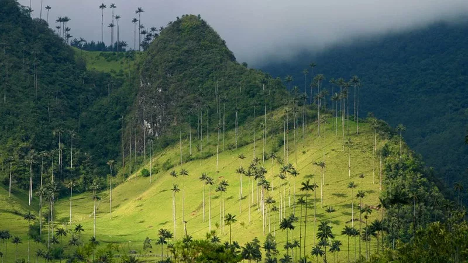

Valle del Cocora: Reino das Palmeiras Mais Altas do Mundo
Escondido entre as montanhas da Cordilheira Central, perto da vila de Salento, no departamento de Quindío, o Valle del Cocora é muito mais do que uma paisagem de cartão-postal: é um dos cenários naturais mais icônicos da Colômbia. Banhado pelo rio Quindío e coberto por névoa e pastos verdes, o vale abriga a palmeira-de-cera-do-Quindío, a árvore nacional do país e a palmeira mais alta do mundo, que pode ultrapassar 60 metros de altura.
A Origem do Nome e a Lenda de Cocora
Segundo a tradição local, o nome "Cocora" vem de uma jovem indígena, filha do cacique Acaime, cujo nome significaria "estrela da água" na língua dos antigos povos da região. A lenda une a figura da princesa à beleza do vale e dos rios que o cortam, e o nome ficou para sempre ligado a esse território, que faz parte da região cafeeira da Colômbia.
Durante muito tempo, o vale foi uma região de pastos e fazendas, onde as palmeiras de cera cresciam espalhadas entre o gado. Com a chegada do turismo, ele passou a atrair viajantes de todo o mundo, que sobem as montanhas atrás de um dos visuais mais fotografados do país.
A Palmeira de Cera e a Proteção da Natureza
A palmeira-de-cera foi declarada árvore nacional da Colômbia, mas já foi muito ameaçada pelo desmatamento e pelo uso de suas folhas em celebrações religiosas. Hoje, programas de conservação e o turismo responsável ajudam a proteger as palmeiras e as florestas de neblina que abrigam aves, como os beija-flores, e outras espécies típicas dos Andes.